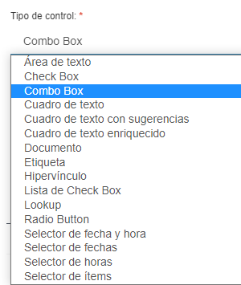
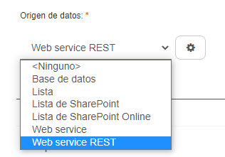
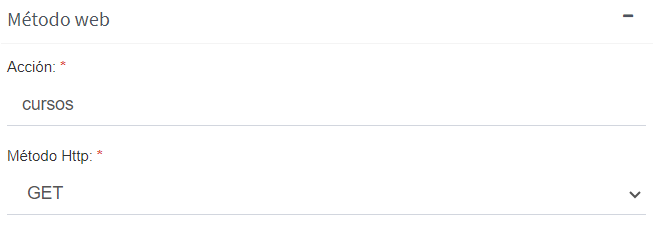
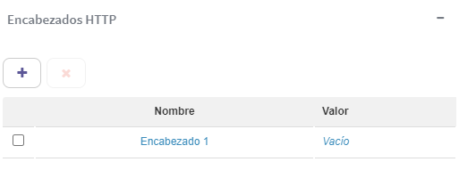
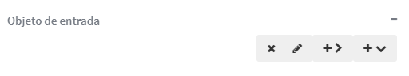
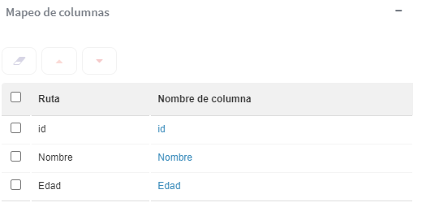
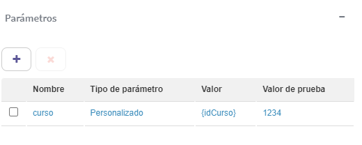
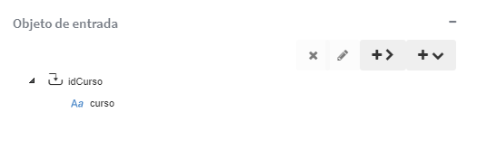
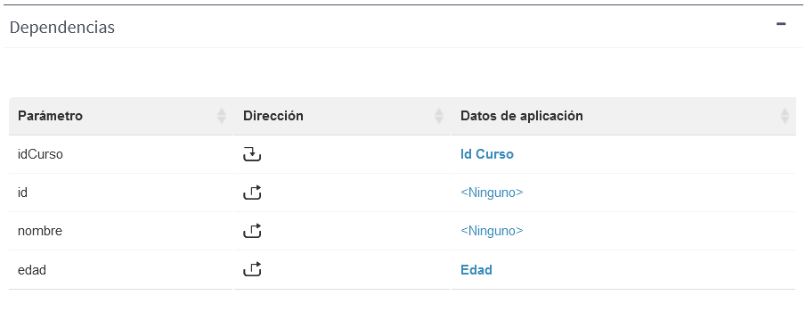
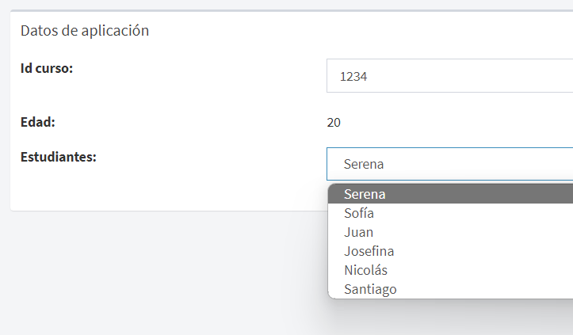

Consumir Servicios REST desde dominios de Qflow
Introducción
El objetivo de este documento es brindar una introducción a cómo consumir servicios REST desde los dominios de Qflow.
Proceso de aplicación
Dentro de los ítems del paquete, seleccionar la opción “Dominio de datos” y agregar un nuevo dominio.
En la sección general:
El tipo de control debe ser “Combo Box”, “Lista de Checkbox”, “Selector de ítems”, “Radio button” o “Cuadro de texto con sugerencias” para requerir una fuente de datos.
{kind=link}
Se debe seleccionar la opción Web service REST de la fuente de datos y con un clic en el botón de configuración la ventana de propiedades de los servicios web REST se abrirá.
La opción de “Selector de ítems” y “combo box” se comportan del mismo modo, mientras que la “Lista de Checkbox”, “Radio button” y “Cuadro de texto con sugerencias” de otro. La diferencia se da en las propiedades; los primeros dos tienen más datos en el parámetro, tienen un nombre, tipo de parámetro, valor y valor de prueba; además, tiene parámetros de salida. Los otros tres solo presentan la opción de nombre de parámetro y valor, sin parámetros de salida.
{kind=link}
Ejemplo de un tipo de control Combo Box
Dentro de la ventana de propiedades de la fuente de datos del servicio web REST:
1) Selección de la conexión del servicio web REST
Usando parámetros de aplicación
Es útil cuando se utiliza la misma URL en diferentes dominios, entonces la configuración de origen ya está definida.
El parámetro se debe definir en la ventana de parámetros de la aplicación, que se debe definir en el mismo nivel que el paquete o en niveles superiores.
Se crea un nuevo parámetro con el botón “+”. En las propiedades, el tipo de parámetro debe ser una conexión de servicio web y en la configuración se define la URL de la API. Se deben aceptar las credenciales de la red y con la flecha se puede probar la URL.
Definiendo en la configuración de la fuente de datos
Con un clic en el botón de configuración, se abrirá la ventana de configuración de conexión del servicio web.
Dentro de esta ventana, se define la URL de la API. Se deben aceptar las credenciales de la red y con la flecha se puede probar la URL.
{kind=link}
2) Método web
Acción: ingresar el nombre del método web que expone la API.
Métodos HTTP: seleccionar el método que se utiliza en la URL, GET, POST o PUT.
{kind=link}
3) Parámetros:
Los parámetros permiten definir valores de entrada que podremos usar en las peticiones al servicio web.
Se pueden agregar diferentes parámetros con sus respectivos nombres, tipos y valor.
El tipo de parámetro puede ser:
“Ninguno”: no tiene ningún tipo.
“Personalizado”: cuando el valor para cada URL es diferente, por lo que se define una variable para que el usuario le pueda cargar ese valor mediante un formulario.
“Sistema”: este parámetro esta hecho especialmente para ciertos métodos de Qflow para hacer consultas más eficientes. La eficiencia se da ya que se pasa el inicio de lo que se está buscando y la API devuelve los datos que coinciden. Solo funciona con el tipo de control de “selector de ítems”.
{kind=link}
4) Encabezados HTTP
Si es necesario se pueden agregar valores en el encabezado HTTP con el botón “+”.
{kind=link}
5) Objetos de entrada:
Diferentes propiedades o propiedades con valor se pueden agregar con el botón “+v” y con el botón “+>” se pueden agregar subpropiedades o subpropiedades con valor.
Para asociar un parámetro con su respectivo valor, se debe agregar una propiedad con valor. Este parámetro debe tener el mismo nombre que el parámetro de la URL y el valor se configura con el que le corresponde de los creados anteriormente.
{kind=link}
6) Mapeo de columnas
Hay diferentes maneras de búsqueda de datos, algunos se buscan por su id y otros por su valor.
Generalmente, la identificación de los datos se encuentra por su valor:

Los datos de las primeras dos filas son los que el usuario va a poder ver. El dato de la segunda es lo que el usuario va a ver al seleccionar un dato y el de la primera fila se podrá visualizar en los detalles del proceso.
El orden de las filas puede ser modificado con las flechas y también se puede borrar el mapeo.
Los nombres de las columnas se pueden modificar.
{kind=link}
Datos encontrados por su id:
Un ejemplo puede ser cuando hay más de dos columnas, al elegir un valor, se pueden ver los otros valores.
7) Parámetros de salida
Se debe probar la consulta para configurar los parámetros de salida.
Estos parámetros son los mismos que los que aparecen en el mapeo de columnas que no fueron eliminados.
Usando estos datos:
En los datos de aplicación se debe agregar un nuevo dato con el nombre del parámetro de salida que se desea utilizar.
Después, en un dato que tenga como dominio el que fue creado anteriormente, en la sección de dependencias, el parámetro de salida que se definió va a aparecer. Para elegirlos, los datos de aplicación deben configurarse con los datos que se han creado previamente.
Finalmente, para que el usuario pueda visualizar estos campos, los datos tienen que ser definidos como editables en la visibilidad del proceso.
Ejemplo
A continuación, se va a definir un ejemplo aplicando toda la información definida anteriormente. Dado un id de un curso se devuelven en un combo box los estudiantes inscriptos a dicho curso. Luego, al seleccionar uno, su edad aparece en un campo de texto.
La URL para realizar la solicitud:
https://run.mocky.io/v3/ac11b3f7-ccfd-4a55-b40a-082f2f17dfb4
Primero se debe crear dominio de datos con tipo de control combo box.
 
Dentro de ventana de configuración de conexión de servicio web configurar la URL, https://run.mocky.io/v3/ac11b3f7-ccfd-4a55-b40a-082f2f17dfb4
La acción del método web será “cursos” y el método HTTP “GET”
La URL necesita el id del curso para devolver la información, por lo tanto, se debe crear un parámetro y un objeto de entrada con ese dato.
{kind=link}
{kind=link}
La consulta debe probarse para definir los parámetros de salida
{kind=link}
{kind=link}
Después, en los datos de aplicación, se deben crear diferentes datos con sus respectivos dominios.

Crear un dato para que el usuario pueda ingresar el id del curso como un parámetro de entrada
Crear un dato donde la edad del estudiante seleccionado aparezca como un parámetro de salida
Crear un dato con el dominio “curso” creado anteriormente, el cual va a devolver los nombres de los estudiantes en un combo box. Definir los parámetros de salida y entrada con los datos creados anteriormente.
{kind=link}
Finalmente, en la plantilla de procesos, definir la visibilidad de los datos como editable.
Una vez que se inicia un proceso de “Cursos”, el formulario se verá de la siguiente manera:
{kind=link}
Una vez que se ingresa el número del curso, se despliega la lista de estudiantes y cuando se selecciona uno sale su edad.